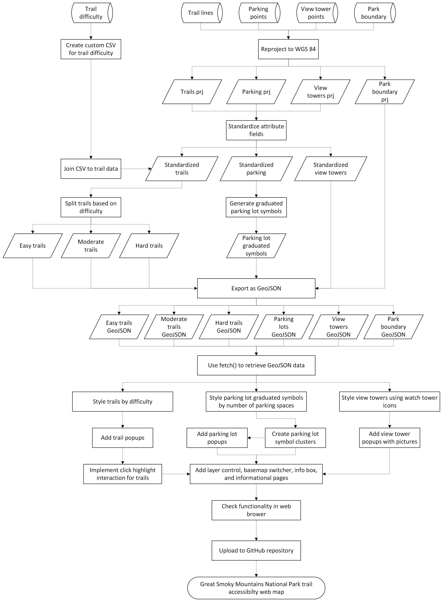

This web map visualizes hiking trails, parking accessibility, viewpoints, and park boundaries in Great Smoky Mountains National Park. It integrates trail difficulty, infrastructure capacity, and scenic observation points into a single interactive environment.
This map is designed for hikers, outdoor visitors, and trip planners who want to explore trail options based on difficulty and access conditions. It also supports users who are unfamiliar with the park and need spatial context before visiting.
The map supports decision-making for hiking and park navigation by allowing users to compare trail difficulty, locate parking availability, and identify viewpoints. It helps users plan visits more efficiently by combining recreational and logistical information in one interactive tool.

Figure 1. Project workflow diagram.
All vector datasets are delivered as GeoJSON and rendered using Leaflet. Basemaps and external services are accessed via tile layers. The final application is hosted on GitHub Pages as an interactive web map.
This project successfully integrates multiple spatial datasets into a single interactive environment that supports real-world decision-making for park visitors. The combination of trail difficulty classification, parking accessibility, and viewpoint visualization creates a comprehensive understanding of both recreational opportunities and infrastructure constraints within Great Smoky Mountains National Park.
The strongest aspects of the map include its clear visual hierarchy, intuitive layer controls, and responsive interactivity such as search, popups, and clustering. Together, these elements allow users to explore the park efficiently without being overwhelmed by dense spatial data.
This web map was created as part of GEO 455: Web Mapping at the University of Wisconsin–La Crosse.